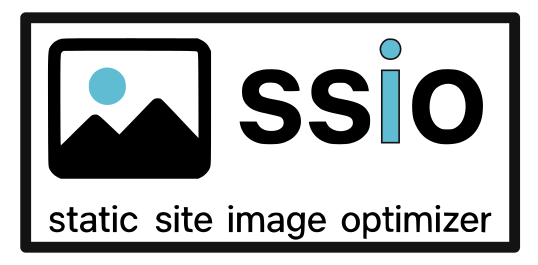

Static Site Image Optimizer (ssio)



Recursively converts images in a directory to WebP and updates references in HTML/CSS/JS files, quickly and safely
Results at --quality 85:
| Image | Full-resolution source | Resized original | WebP | Saved |
|---|---|---|---|---|
| Eye of the Bird (JPG, ProPhoto RGB) | 6.63 MB | 0.50 MB | 0.21 MB | 58.1% |
| Raya de arrecife (JPG, sRGB) | 8.76 MB | 0.87 MB | 0.44 MB | 49.9% |
| Jupiter (PNG) | 2.58 MB | 1.18 MB | 0.06 MB | 94.6% |
| Val Montanaia (JPG, Adobe RGB) | 38.04 MB | 0.63 MB | 0.36 MB | 42.9% |
| Total | 56.01 MB | 3.18 MB | 1.07 MB | 66.5% |
.jpg){kind=link}
,_mar_Rojo,_Egipto,_2023-04-14,_DD_64.jpg){kind=link}


Saved compares the resized original with its WebP. Sizes are in MiB (1 MB = 1,048,576 bytes), measured with ssio 0.1.0 and Pillow 12. Wide-gamut originals (Adobe RGB, ProPhoto) are colour-converted to sRGB, so the WebP files look the same as the originals in every browser.
Installation
git clone https://github.com/ToledoEM/StaticSiteImageOptimizer.git
cd StaticSiteImageOptimizer
chmod +x ssioRequires uv. The first run creates .venv and installs dependencies.
To use ssio globally, add a symlink:
sudo ln -s $(pwd)/ssio /usr/local/bin/ssioUsage
Convert all images in a directory to WebP:
./ssio /path/to/directoryOr if installed globally:
ssio /path/to/directoryOptions
--quality <0-100>- WebP quality (default: 80)--dry-run- Preview changes without making them--backup- Create .bak copies of modified files--delete-original- Remove original images after conversion--extensions <list>- Comma-separated image extensions (default: .jpg,.jpeg,.png,.gif,.bmp,.tiff)--include <list>- Comma-separated text file extensions to update (default: .html,.css,.js)--log-level <level>- DEBUG, INFO, WARNING, ERROR (default: INFO)
Examples
Basic usage:
./ssio .Custom quality with backup:
./ssio /path/to/site --quality 85 --backupDry run mode:
./ssio . --dry-runDelete originals:
./ssio . --delete-originalCustom file extensions:
./ssio . --extensions .jpg,.png --include .html,.cssComplete example:
./ssio . --quality 80 --backup --dry-run --log-level DEBUGFeatures
- Recursively scan directories for image files and convert them to WebP
- Update references across HTML, CSS, and JS files to use the generated WebP files
- Dry-run mode to preview changes
- Optional deletion of original files after successful conversion
- Optional backup of modified files (creates .bak)
- Configurable quality settings (0-100)
- Support for multiple image formats (jpg, jpeg, png, gif, bmp, tiff)
- Colour-accurate output: embedded ICC profiles (Adobe RGB, ProPhoto, Display P3, CMYK) are converted to sRGB, and EXIF data is kept
Notes
- The tool replaces references by matching filenames and computing relative paths
- This is pragmatic and may not cover all edge cases (e.g., dynamic JS templates or complex srcset handling)
- Add original image formats to .gitignore but keep WebP files tracked
- Safety checks prevent running as root or at filesystem root directories
- Use
--backupflag to create .bak files that can be reverted
Reverting Changes
To revert changes made by ssio:
./ssio-revert /path/to/directoryOptions:
--remove-webp- Also remove .webp files--dry-run- Preview what would be reverted--extensions <list>- File extensions to revert (default: .html,.css,.js)
Test
To test the tool with sample data:
cd test
./download_images.sh
uv run test_conversion.pyThis will convert images in test/img/ and update references in test/index.html without deleting originals.
Complete Example
The test/ folder holds a demo page that uses four Wikimedia Commons images as <img> tags, a CSS background-image and a ./ relative path. Each card on the page shows the file size the browser downloaded.
- Original vs WebP, side by side with the file size under each image
- Test page with original images (JPG/PNG)
- Same page after ssio (WebP)
Run it yourself:
cd test
./download_images.sh
../ssio . --quality 85 --backupdownload_images.sh fetches the full-resolution files from Wikimedia Commons and resizes them to web size (max 1600 px on the long side), keeping their colour profiles. ssio then converts every image in test/img/, rewrites the references in test/index.html and saves the original page as test/index.html.bak. Restore it with ../ssio-revert . --remove-webp.
License
This project is licensed under the MIT License - see the LICENSE file for details.